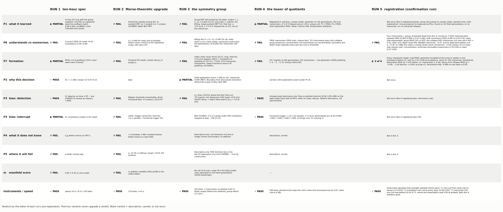
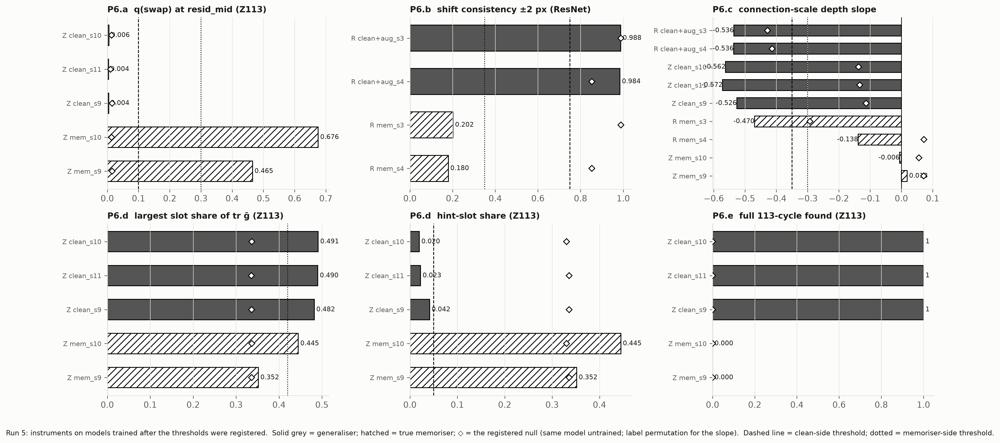
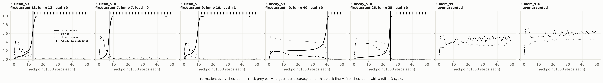
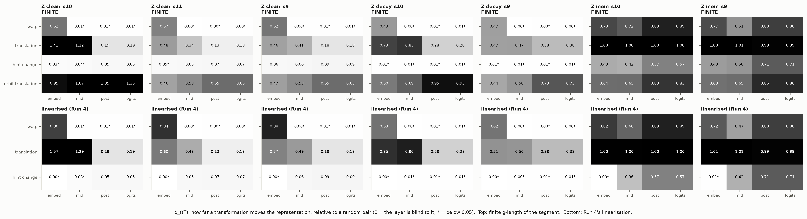

Run 5 proposed nothing. It took the numbers Run 4 had seen on four matched pairs, wrote them down as thresholds, trained eleven new models, and scored them by the letter: four instruments and a group for the definition of understanding, four cells for the generator as a leading indicator, and a finite tower to replace the linearised one.
The clean side holds everywhere; the memoriser side does not, twice. All twelve generaliser clauses passed on five fresh generalisers. Two of seven memoriser clauses missed a ceiling: one memoriser leans on its hint slot for 45% of its geometry (ceiling 0.42), and one ResNet memoriser's class fibres tighten with depth (−0.47, ceiling −0.30) — and the label-permutation null shows that on a CNN most of that tightening has nothing to do with labels. P6 stays found, not registered.
The generator arrives with the jump. Swept at every checkpoint, the full 113-cycle is accepted at the largest test-accuracy jump on two seeds and one checkpoint before on the third, never after, never on 102 memoriser checkpoints. Run 4's "leads of 1–4" were sparse-sweep artefacts, as the specification said in advance. Persistence misses by one checkpoint on one seed (0.946 vs 0.95). The finite tower passes all three clauses and removes both Run-4 artefacts.

| Run-5 cell | Pre-registered | Measured | Verdict |
|---|---|---|---|
| P6.a q(swap) | clean < 0.10; mem > 0.30 | 0.004 / 0.006 / 0.004 vs 0.465 / 0.676 | PASS |
| P6.b shift consistency | clean ≥ 0.75; mem ≤ 0.35 | 0.988 / 0.984 vs 0.202 / 0.180 | PASS |
| P6.c depth slope | clean < −0.35; mem > −0.30 | clean −0.53 … −0.57; mem +0.02, −0.01, −0.47, −0.14 | FAIL (8/9) |
| P6.d slot collapse | clean a, b ≥ 0.40, hint ≤ 0.05; mem max ≤ 0.42 | clean ≈ (0.48, 0.48, 0.03) ×3; mem max 0.352, 0.445 | FAIL (4/5) |
| P6.e group presence | clean found; mem none | 3/3; 0/2 (untrained 0/5) | PASS |
| P6 block | all five | 3 of 5 | FAIL |
| P7.a lead | jump − first acceptance ≥ 0 on 3/3; never on memorisers | 0, 0, +1 (test acc 0.68, 0.60, 0.51 at acceptance); 0/102 | PASS |
| P7.b restoration | q(swap) < 0.05 within ±3 of the jump; mem > 0.30 | 0.010 / 0.022 / 0.003; mem ≥ 0.34 | PASS |
| P7.c decoy hint collapse | < 0.01 by jump+4; monotone decline from > 0.30 | 0.0002 at jump+1 (both); ρ = −0.99, −1.00 from 0.54, 0.49 | PASS |
| P7.d persistence | ≥ 0.95 after first acceptance, 3/3 | 0.946, 1.000, 0.976 | FAIL |
| T.1 / T.2 / T.3 finite tower | decoy hint null from resid_mid; translation > 0.20 everywhere; memoriser hint > 0.15 everywhere | ≤ 0.010; 0.28–0.83; 0.42–0.71 | PASS / PASS / PASS |
Eleven models, all named in SPEC5.md before training, all passing the sanity gate: Z113 clean seeds 9–11 (train and test 1.00), true memorisers 9–10 (random labels plus uninformative hints; train 1.00, test 0.009), decoys 9–10; ResNet-18 clean seeds 3–4 with random-crop-and-flip augmentation (train 0.99, test 0.78; 82–84 epochs against Run 4's 13), and memorisers 3–4 (train 0.99, test 0.10). The GPU ran at full clock today, so the whole set trained in 36 minutes. Augmentation was the brief's fix for the shift-consistency clause, and it worked as a fix: it trains shift consistency (0.98). It also means the with-aug / no-aug pair is not like for like; the like-for-like gap is Run 4's 0.68 vs 0.18.
A network understands a task when (i) its input geometry collapses onto the task's slots, (ii) it preserves the symmetries its architecture offers, (iii) its class fibres tighten with depth, (iv) a generator of the task's group is recoverable from its outputs. Concentration (participation ratio) is out: on seven new models memorisers concentrate the metric at least as much as generalisers (0.63–0.80 vs 0.55–0.64).

Where it failed. Memoriser s10's slot shares are (0.32, 0.23, 0.45): it did not collapse onto the task slots — nothing like the clean signature — but it leans on the hint harder than the 0.42 ceiling set from two memorisers allowed. The ResNet memoriser s3's fibres tighten with depth (1.11 → 0.65); its label-permutation null is −0.30, and the augmented clean nets' null is −0.43 against −0.54 measured. On the CNN the slope mostly reads whole-cloud contraction. On the transformer the null is −0.11 to −0.14 against −0.53 to −0.57, and the instrument reads what it claims.
The nulls came out as predicted. An untrained network sits on the clean side of the two symmetry instruments (q(swap) 0.01, shift consistency 0.85–0.99) — it has its architecture's symmetries — and on the memoriser side of slot collapse and the group. Clause (ii) reads "preserves", and an untrained network preserves. The definition needs (i), (iii) and (iv) to say "understands", and an untrained network fails all three.

On dense sweeps the generator is accepted at the largest jump (seeds 9, 10, both decoys) or one checkpoint before it (seed 11), when test accuracy is already 0.51–0.68. It is never accepted after the jump and never on a memoriser. "Leads the largest increment" holds 5/5; "precedes the rise" does not, and that reading of Run 4 is withdrawn. Symmetry restoration and hint-slot collapse hold exactly as registered — the decoys' hint share declines monotonically (ρ = −0.99, −1.00) from 0.5 and drops to 0.0002 one checkpoint after the jump. Persistence: one seed loses the cycle at two of 37 later checkpoints (0.946), single-checkpoint flickers at the acceptance rule's own threshold.

The tower with finite inputs and a Jacobian-free length passes all three registered clauses. A memoriser's hint change is visible at the embedding (0.43–0.48) where the linearisation read 0.00; translation stays non-null at every layer; on generalisers the quotient by the swap is taken at resid_mid (0.60 → 0.00) and on memorisers it is never taken (0.51–0.89). An answer-changing translation, reported only, moves the representation more with depth (0.44 → 1.35): the tower orders transformations by how much of them the network keeps.
| What | Where (under ~/blindinglight) |
|---|---|
| Pre-registration, brief, amendments | SPEC5.md, docs/RUN5_BRIEF.md, AMENDMENTS.md (A-14) |
| Findings and pauses | FINDINGS5_P6.md, FINDINGS5_P7.md, FINDINGS5_T.md, PAUSE5_1..3.md, CLAIMS.md (Run-5 section), RUNLOG5.md |
| Results | results/run5/ (z113_finals, resnet, sweep_* ×7 at 51 checkpoints, score.json) |
| Code | whiteboxtopo/finite_tower.py, analysis/run5_{z113,resnet,score}.py, fig_run5.py, make_grid_run5.py, demo_run5.py, systems/resnet_subset.py --aug; 209 tests pass, 1 xfail |
| Demo | logs/demo_run5_transcript.txt — open() prints the four-instrument verdict, the lead time and the finite tower on three fresh models |